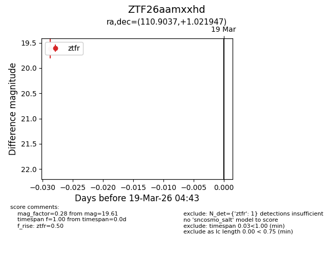
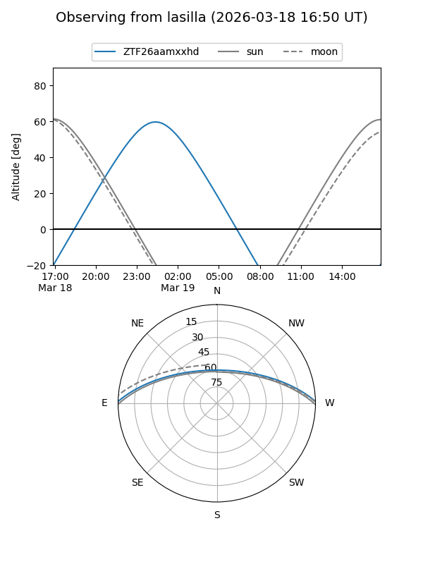
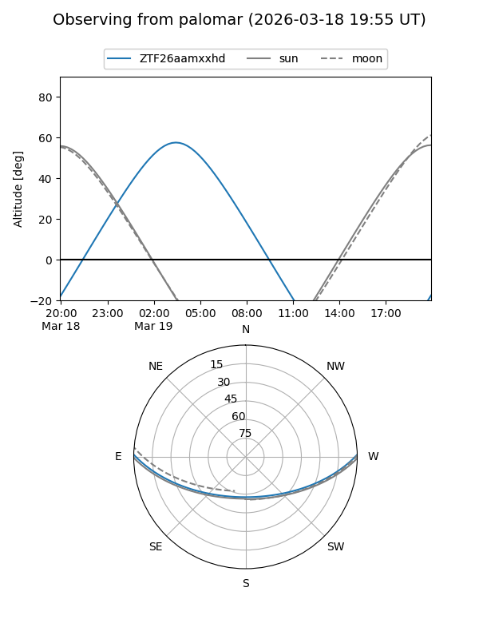

ZTF26aamxxhd
Target ZTF26aamxxhd at 2026-03-19 04:45
Aliases and brokers:
FINK: link
Lasair: link
ALeRCE: link
alt names
ZTF26aamxxhd (ztf,fink_ztf)
Coordinates:
equatorial (ra, dec) = 110.9037,+1.02195
equatorial (HMS+DMS) = 07:23:36.88,+01:01:19.01
galactic (l, b) = (215.7034,+7.62303)
Flags:
Photometry:
last ztfr=19.61
1 ztfr detections
Lightcurve

Visibility


Additional plots